Chamomile
Matricaria chamomilla
A familiar herb in European kitchens and herbal teas, traditionally used for gentle digestive comfort.
Fermented herbal food supplements
Scroll down. We will show you where it comes from, how it is made, and how it fits into a day.
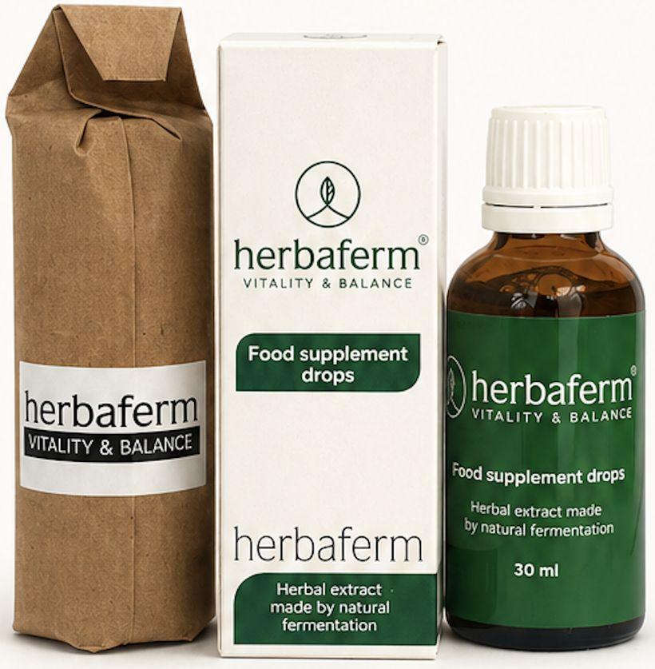
Chapter one · Where it began
A Hungarian founding team, with a scientist at its centre, developed Herbaferm Drops. The Drops were registered in Hungary in 2018. Since 2023, Herbaferm has been a Singapore company.
Chapter two · Seven herbs you probably know
Matricaria chamomilla
A familiar herb in European kitchens and herbal teas, traditionally used for gentle digestive comfort.
Achillea millefolium
A wayside flowering herb used in traditional European herbal practice to support digestion and normal gut function.
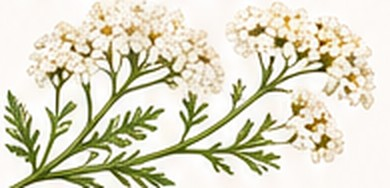
Sambucus nigra
The creamy blossoms of the elder tree, a classic ingredient in traditional European preparations.
Rosa canina
The fruit of the dog rose, a natural source of vitamin C and long valued in traditional herbal use.
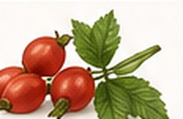
Apis mellifera propolis
A resinous substance collected by bees from plant buds, traditionally used for its natural, protective qualities.
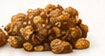
Quercus robur
Contains tannins and has a long tradition of use in herbal preparations for the digestive tract.
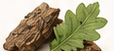
Artemisia absinthium
A bitter herb used in traditional European practice to support digestion and maintain a healthy balance.
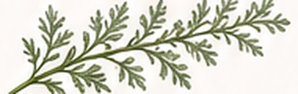
Chapter three · How it is made
Chamomile, yarrow, elderflower, rosehip, propolis, oak bark and white wormwood. Kitchen and herbal-tea plants from Europe.
Natural fermentation, the slow, traditional way. No rush, no shortcuts.
No preservatives and no artificial colours. The fridge does the job instead: keep the bottle at 5 to 12 °C.
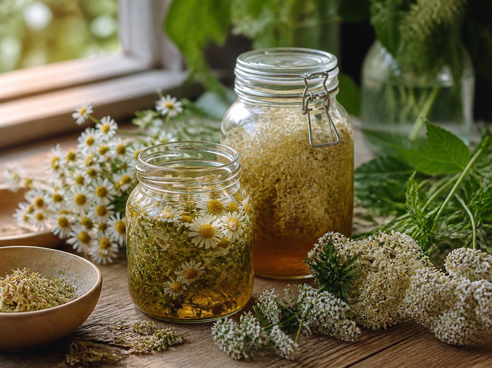
Illustrative imageChapter four · The range
Herbal extract made by natural fermentation. 8 drops in a glass of water, twice a day.
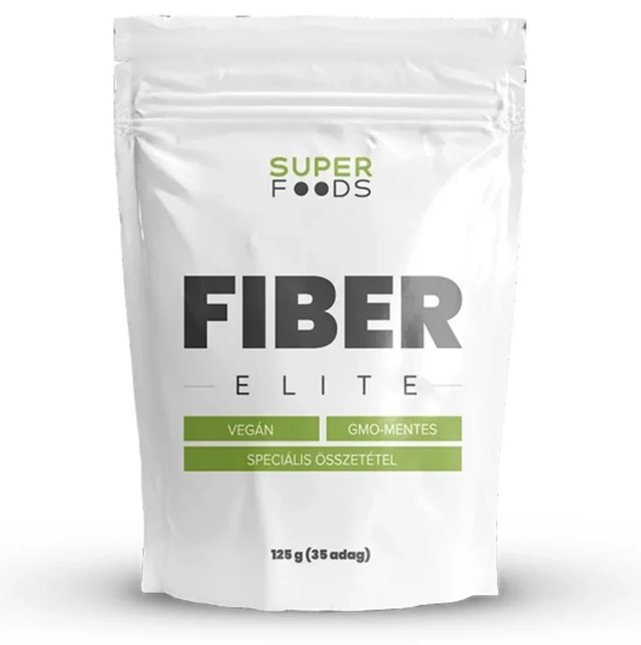
Everyday add-inA fibre-rich additive for smoothies, shakes, yoghurt and porridge. 3.5 g a day with a meal.
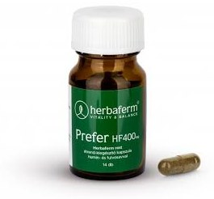
Optional add-onCapsules of fermented herb fibres, taken alongside Drops, morning and evening.
Chapter five · A day with Herbaferm
Fill a glass with about 1.5 dl of water and add 8 drops of Herbaferm Drops. Take the capsule alongside, if you use Prefer HF400.
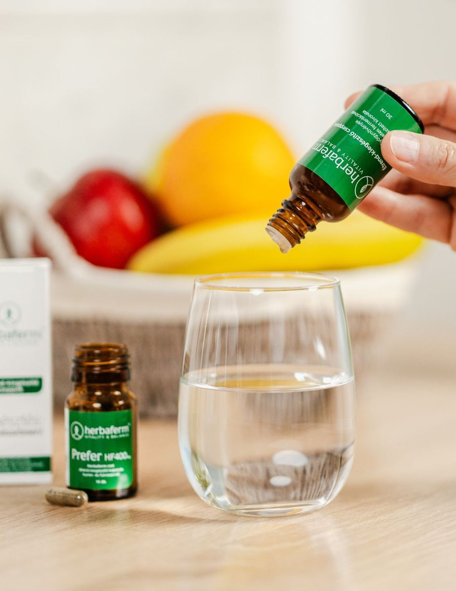
Fiber Elite goes into porridge, yoghurt or a smoothie. It can be heated, so soups and warm bowls work too. Take 3.5 g a day with a meal, or on training days 3.5 g after exercise, up to three times.
Repeat the morning routine, then put the bottle back in the fridge at 5 to 12 °C. A 30 ml bottle holds about 480 drops, which is about a month at the regular amount.
Chapter six · For you, or someone you love
Buying for a parent, a grandparent or a new mum? Pick a routine that suits them. If they are pregnant, recovering from birth or on medication, check with their healthcare professional first. These are illustrative stories, not customers.
Between feeds and nappies she needs something she can do with one hand. Drops go into the glass of water she already pours.
See DropsEarly training, long desk days, lunch at the keyboard. A spoonful of Fiber Elite goes into the shake or the oats.
See Fiber EliteAfter a big change, a routine works best when it starts small. A healthcare professional should be asked first.
Read the guideChapter seven · Why you can trust it
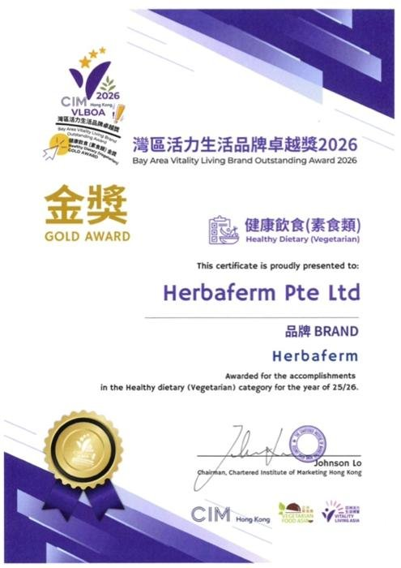
Presented by the Chartered Institute of Marketing Hong Kong in the Healthy Dietary (Vegetarian) category for 2025/26.
Awarded to Herbaferm Pte. Ltd. by the Asia-Pacific Longevity Medicine Society, in celebration of excellence and innovation in longevity medicine.
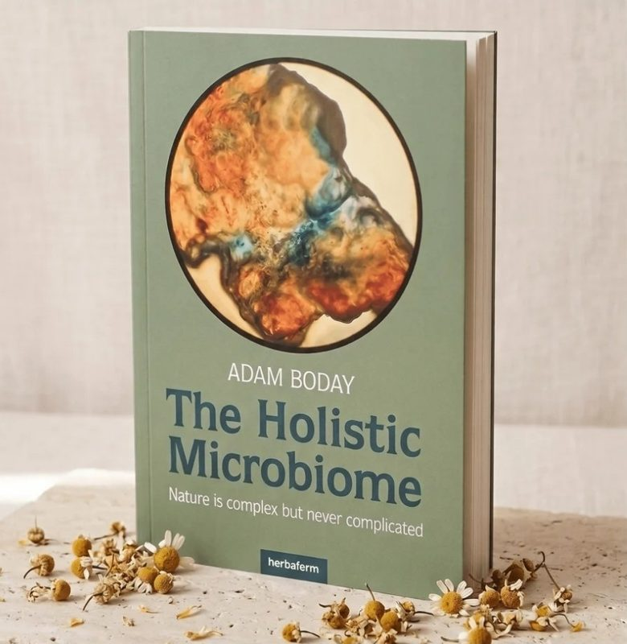
A plain-language book on the microbiome, published by Herbaferm. Our short guide to the gut microbiome
Herbaferm products are food supplements, not medicines. They sit beside a varied diet and do not replace one. Our leaflets state that no health effects can be attributed to the products.
Chapter eight · Keep exploring
Three quick questions about how you like to take things. It suggests a routine, not medical advice.
Guides, kitchen ideas and plain-language science.
The old kitchen process behind every Herbaferm product, without the jargon.
How to ease in, what to expect, and when to settle on your regular amount.
It smells a bit like malt and survives the stove, so it goes further than a shake.
Three look-alike words on gut-health labels, sorted out in plain English.
Where each one comes from and what people have traditionally done with it.
What the word means, what scientists are still working out, and where food and herbs fit in.
No preservatives means a bit more care. Here is what that looks like day to day.
Final chapter
Ask for the partner evidence pack: formulation, quality, testing, shelf life and literature.
The range
Three fermented herbal food supplements. Prices in Singapore dollars.
Herbal extract made by natural fermentation, taken in a glass of water.
A fibre-rich additive for smoothies, shakes, yoghurt and porridge.
Capsules of fermented herb fibres, taken alongside Drops.
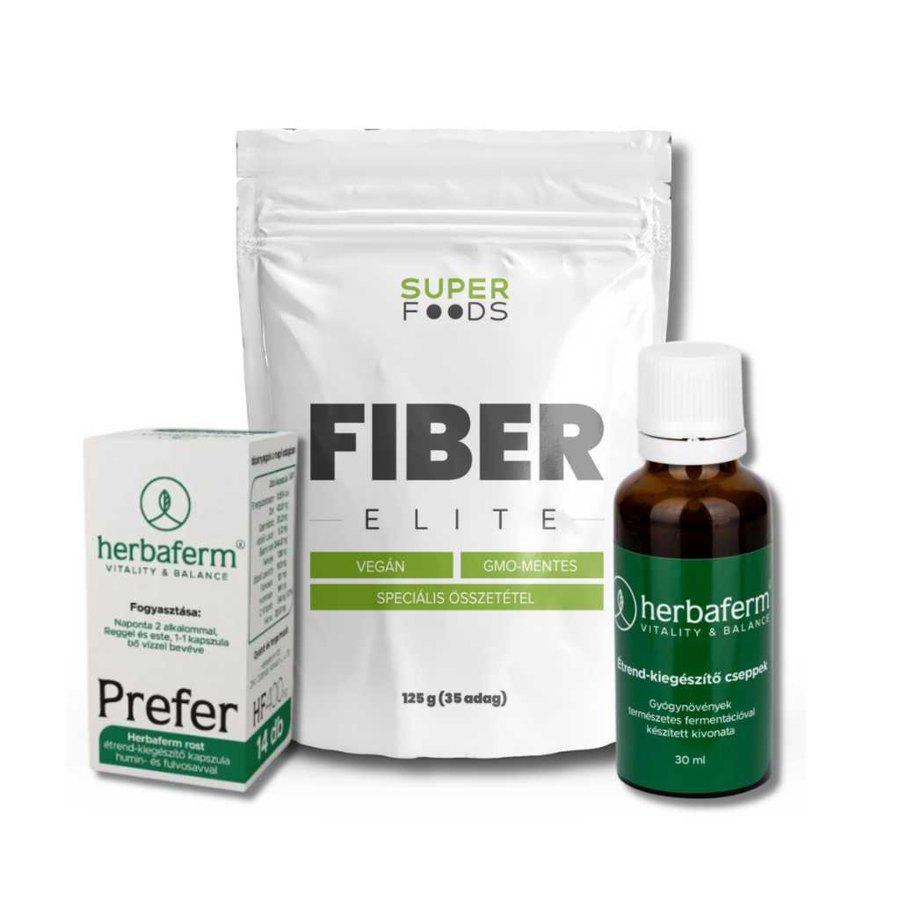
Prices in Singapore dollars. Delivery, returns and checkout are connected in the live build. To supply
The whole range ships from this store. It is also listed on the ConnectingDNA marketplace in Singapore.
Being built. Leave your email for stockist news.
A 30 ml bottle holds about 480 drops. Move the sliders to match how you take them.
Herbaferm Drops go into a glass of water, morning and evening. The core of the range.
Herbaferm DropsFiber Elite stirs into smoothies, shakes, yoghurt or porridge, and can be heated.
Fiber ElitePrefer HF400 pairs fermented herb fibres with fulvic acid, humic acid and vitamin C.
Prefer HF400| Herbaferm Drops | Fiber Elite | Prefer HF400 | |
|---|---|---|---|
| Format | Liquid drops, 30 ml | Powder, 125 g | 14 capsules |
| Price | S$55 | S$55 | S$45 |
| How you use it | 8 drops in 1.5 dl of water, twice a day | 3.5 g a day with a meal, stirred into food or drinks | 1 capsule morning and evening |
| One pack lasts | About 30 days at 8 drops twice a day | About 35 days at 3.5 g a day | 7 days at 2 capsules a day |
| Main ingredients | Fermented extract of 7 herbs | 75% whole barley malt, 12.5% oat flour | Fermented herb fibres, fulvic acid, humic acid, vitamin C |
| Cost per day | About S$1.83 | About S$1.54 | About S$6.43 |
| Storage | Fridge, 5 to 12 °C | Cool and dry To confirm | Cool and dry To confirm |
| Good to know | No preservatives | Vegan. Contains gluten | Gelatine capsule |
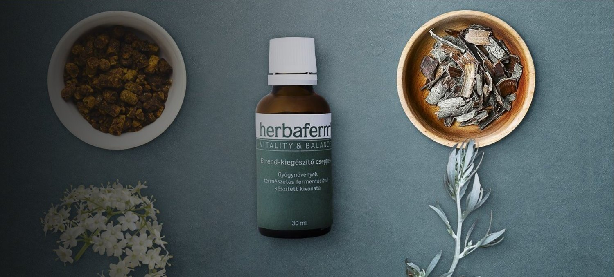
A herbal extract made by natural fermentation. Take it in a glass of water, morning and evening.
Food supplement. Speak to a healthcare professional if you are pregnant or take medication.
About 1.5 dl of water.
Morning and evening. Shake the bottle first.
Keep it at 5 to 12 °C. There are no preservatives.
New to it? Start with 5 drops morning and evening and build up over two to three weeks. Read the first-month guide. To confirm
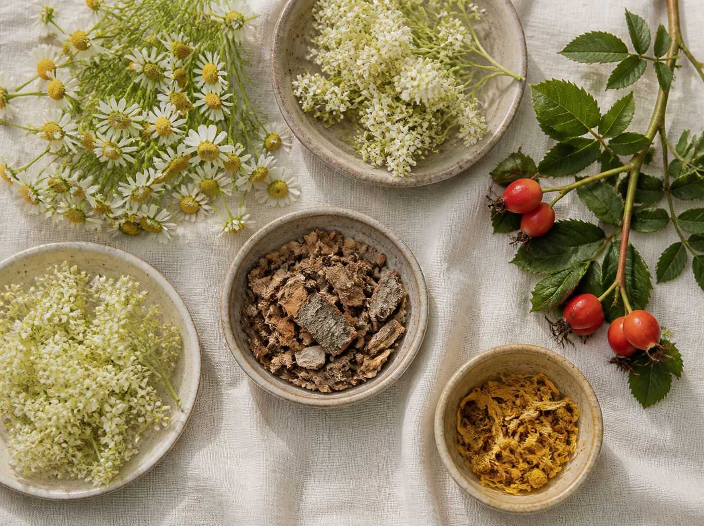
Illustrative imageChamomile, yarrow, elderflower, rosehip, propolis, oak bark and white wormwood. Kitchen and herbal-tea plants from Europe, fermented the traditional way. No artificial additives, preservatives or colours.
Herbal extract made by natural fermentation of seven plant ingredients:
No artificial additives, preservatives or colours. To confirm the full label for Singapore.
A 30 ml bottle holds about 480 drops. Move the sliders to match how you take them.
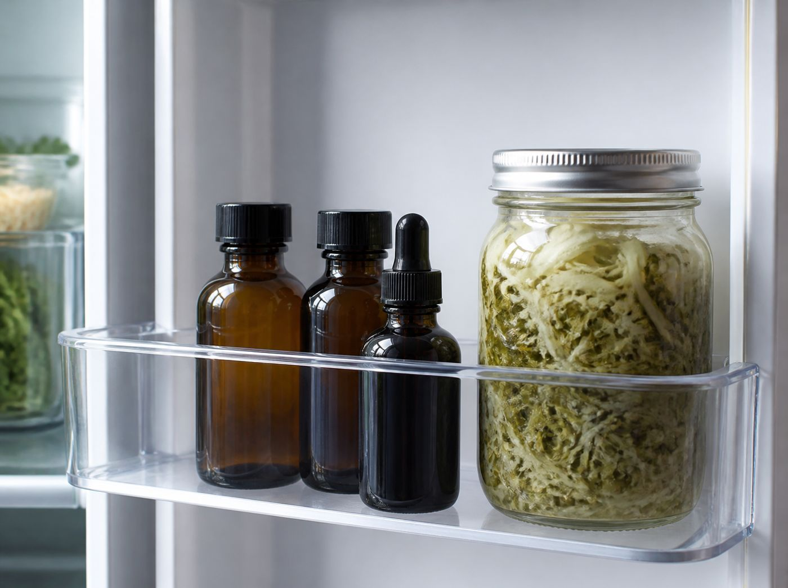
Singapore delivery times and fees, returns terms and payment methods will be listed here. To supply Also listed on the ConnectingDNA marketplace in Singapore. To confirm
A 30 ml bottle holds about 480 drops. At 8 drops twice a day, that is about one month. The leaflet suggests a slower build-up over the first weeks.
The leaflet suggests starting with 5 drops in the morning and 5 in the evening, then increasing gradually to up to 15 drops twice a day over two to three weeks. After that, 8 drops twice a day is the regular amount. Always take the drops in water. To confirm
Some people notice temporary digestive changes such as gas or looser stools when they start. This is why we suggest building up gradually. If you are uncomfortable, reduce the amount or pause. To confirm
Keep the bottle in the fridge at 5 to 12 °C. The drops contain no preservatives. Check the best-before date printed on the pack.
Herbaferm describes the Drops as free from preservatives, alcohol and sugar. The leaflets confirm no preservatives. To confirm
Anyone with a diagnosed health condition, anyone taking medication, and anyone who is pregnant. The leaflets also advise stopping the product if you notice hypersensitivity to an ingredient, and using Prefer HF400 only under professional supervision if you have histamine sensitivity.
Delivery details for Singapore will be listed here. To supply
Returns and refund terms will be listed here. To supply
More answers on the FAQ page, or ask the Herbaferm assistant.
A fibre-rich add-in with a malt aroma. Stir it into food and drinks, or heat it.
Food supplement. Vegan and GMO-free, according to the leaflet.
A small spoonful of the fine powder.
Porridge, yoghurt, a smoothie or a protein shake. It can be heated too.
3.5 g two to three times a day, after exercise.
Need ideas? Four easy ways to eat Fiber Elite.
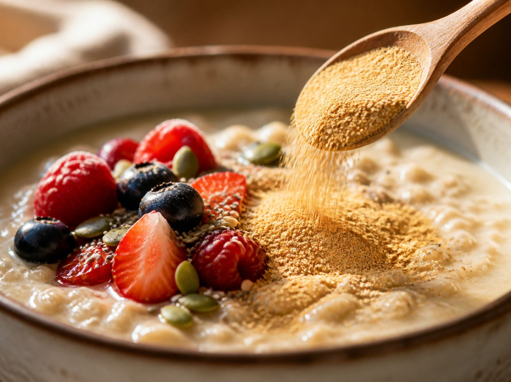
Illustrative image75% whole barley malt and 12.5% oat flour, with a characteristic malt aroma. Contains gluten. To confirm The final composition is still to be confirmed with Herbaferm.
A 31-day study in 20 elite water polo players looked at a vegan protein supplement with pre- and probiotics. Herbaferm's founders are among its authors and the abstract does not name Fiber Elite. See the reference
75% whole barley malt and 12.5% oat flour, with a characteristic malt aroma and flour-like texture. Contains gluten. To confirm A newer Herbaferm note describes dark-germinated barley with naturally occurring enzymes, which does not match this leaflet, so the final composition is still to be confirmed. Another Herbaferm document describes a different formulation, so the final label must be confirmed.
A 31-day study in 20 elite male water polo players compared a vegan protein supplement with and without pre- and probiotics. It was published in the Journal of the International Society of Sports Nutrition in 2024. Herbaferm's founders are among the authors, and the abstract does not name Fiber Elite.
A 125 g pouch at 3.5 g per serving. Everyday use is once a day; athletes take two or three servings after training.
Store as printed on the pack. Herbaferm's notes do not give a shelf life for Fiber Elite yet. To confirm
Singapore delivery times and fees, returns terms and payment methods will be listed here. To supply Also listed on the ConnectingDNA marketplace in Singapore. To confirm
The everyday amount is 3.5 g a day with a meal. Athletes take 3.5 g two to three times a day, after training, ideally in a smoothie or protein shake. You can also stir it into yoghurt or porridge, or heat it into food.
No. The current leaflet lists 75% whole barley malt and 12.5% oat flour and states that Fiber Elite contains gluten.
At list price, Drops at the regular amount are about S$1.83 a day (S$55 for about 30 days). Fiber Elite at 3.5 g a day is about S$1.54 a day. Prefer HF400 is S$3.21 per capsule. Prices are before any offers.
Anyone with a diagnosed health condition, anyone taking medication, and anyone who is pregnant. The leaflets also advise stopping the product if you notice hypersensitivity to an ingredient, and using Prefer HF400 only under professional supervision if you have histamine sensitivity.
Delivery details for Singapore will be listed here. To supply
Returns and refund terms will be listed here. To supply
More answers on the FAQ page, or ask the Herbaferm assistant.
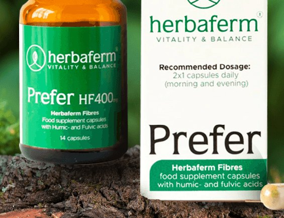
Fermented herb fibre capsules, developed to be taken with Herbaferm Drops.
One 14-capsule pack lasts 7 days at two capsules a day, so it works as a trial pack. Food supplement. Histamine sensitivity: ask a healthcare professional first.
One capsule with your glass of water.
One more capsule with your second glass.
Prefer HF400 was developed to complement Herbaferm Drops.
A 14-capsule pack lasts 7 days, so it works well as a trial. To confirm Another Herbaferm document describes a different dose.
Gelatine capsule shell, so not suitable for vegetarians. Halal status is not confirmed yet. To confirm
Per 400 mg capsule:
Gelatine capsule shell. Hungarian registration number on the leaflet is truncated. To confirm
Herbaferm's notes give about 1 year for the capsules. To confirm The best-before date is printed on the pack.
Singapore delivery times and fees, returns terms and payment methods will be listed here. To supply Also listed on the ConnectingDNA marketplace in Singapore. To confirm
Yes. Prefer HF400 was developed to be taken together with Herbaferm Drops. The capsule leaflet suggests one capsule in the morning and one in the evening.
The capsule shell is gelatine, so the capsules are not suitable for vegetarians. Halal status has not been confirmed. To confirm
Anyone with a diagnosed health condition, anyone taking medication, and anyone who is pregnant. The leaflets also advise stopping the product if you notice hypersensitivity to an ingredient, and using Prefer HF400 only under professional supervision if you have histamine sensitivity.
Delivery details for Singapore will be listed here. To supply
Returns and refund terms will be listed here. To supply
More answers on the FAQ page, or ask the Herbaferm assistant.
About Herbaferm
Who we are, where the range comes from, and the documents behind it.
Who is behind Herbaferm and what we stand for.
Herbaferm develops food supplements by fermenting medicinal herbs with a natural community of microorganisms. The Drops were registered in Hungary in 2018, and the team set up Herbaferm Pte. Ltd. in Singapore in 2023.
The founders come from food science, medicine and finance, and the company still works closely with the scientists behind the formula. To confirm
The company starts in Budapest, Hungary. The investor deck says about eight years before November 2025. To confirm
Herbaferm Drops registered in Hungary, no. 20075/2018.
Herbaferm Pte. Ltd. established in Singapore.
Study related to Fiber Elite published in the Journal of the International Society of Sports Nutrition.
Gold Award at the CIM Hong Kong Bay Area Vitality Living Brand Outstanding Awards.
Additional milestones (formula development, UK launch as ReBiotika, first Singapore partners) can be added once confirmed. To confirm
Co-founder and CEO
Co-founder, scientist
Co-founder, finance
Singapore contact
Herbaferm also runs sites for Hungary and the UK. This site is for Singapore.
Names and titles are taken from the investor deck. Photos, short bios and confirmation of roles are needed. To supply
Plant ingredients and traditional fermentation, with no artificial additives, preservatives or colours.
We describe what the products are and what the research covers. We do not promise outcomes.
We work with clinics and specialists who guide customers, and supply the evidence they ask for.
What Herbaferm has been recognised for, and what is still to be confirmed.
2026
Presented to Herbaferm by the Chartered Institute of Marketing Hong Kong in the Healthy Dietary (Vegetarian) category for 2025/26.
2026
Awarded to Herbaferm Pte. Ltd. by the Asia-Pacific Longevity Medicine Society, in celebration of excellence and innovation in longevity medicine.
This recognises the company and its work. It is not evidence that a product works or is safe for any health purpose.
These are registrations and publications, not awards, but they are part of the same story.
Herbaferm Drops, no. 20075/2018, as a food supplement.
Quality and documentsA study related to Fiber Elite in the Journal of the International Society of Sports Nutrition.
What it coversHerbaferm Pte. Ltd. established in Singapore.
About HerbafermBook, 2026
By Adam Boday, published by Herbaferm. A plain-language book on the microbiome and the natural world around it. Where to buy it in Singapore is still to be confirmed. To confirm
Awards recognise the brand. They are not health claims, and our leaflets state that no health effects can be attributed to the products.
Registrations, lab documents and manufacturing information, with what is still being updated.
Asian buyers and clinic partners look at documents first, so they live here. Each item becomes a downloadable file once supplied. Items marked as needing an update are not yet ready for public use.
Herbaferm Drops, Hungarian National Institute of Pharmacy and Nutrition, no. 20075/2018.
Capsule shell supplier document for Prefer HF400.
English leaflets for Drops and Prefer HF400, and the Fiber Elite leaflet.
A current lab report is being prepared. Ask us for the latest declaration.
Renewal in progress. The current certificate will be added here once issued.
The HACCP file received is a scan. A readable summary is needed.
How the products are classified and labelled in Singapore, as confirmed by Herbaferm.
Stability data and best-before periods for each product.
The company develops and produces its dietary supplement family at Csömör, Hungary.
Drops contain no preservatives and need refrigeration at 5 to 12 °C. We plan the supply chain around this.
Best-before dates are printed on every pack. Typical periods will be listed once confirmed. To confirm
Gold Award at the CIM Hong Kong Bay Area Vitality Living Brand Outstanding Awards 2026, and more on the awards page.
Learn
Everything behind the range in one place: how to use it, what is in it and what the research does and does not say.
How to use the range, and the plain-English story behind it.
Featured guide
How to ease in, what to expect, and when to settle on your regular amount.
Read the guide
The old kitchen process behind every Herbaferm product, without the jargon.
How to ease in, what to expect, and when to settle on your regular amount.
It smells a bit like malt and survives the stove, so it goes further than a shake.
Three look-alike words on gut-health labels, sorted out in plain English.
Where each one comes from and what people have traditionally done with it.
What the word means, what scientists are still working out, and where food and herbs fit in.
No preservatives means a bit more care. Here is what that looks like day to day.
Articles are drafts written from the product leaflets and published research, for Herbaferm to review and extend. To confirm
A one-page PDF with the first-month schedule, storage tips and Fiber Elite ideas. The schedule itself is in Your first month with Drops. The PDF is produced once the content is approved. To supply
Seven herbs. Tap one to see what it is and which products use it. Descriptions refer to traditional use, not to health effects.
A familiar herb in European kitchens and herbal teas, traditionally used for gentle digestive comfort.
A wayside flowering herb used in traditional European herbal practice to support digestion and normal gut function.
The creamy blossoms of the elder tree, a classic ingredient in traditional European preparations.
The fruit of the dog rose, a natural source of vitamin C and long valued in traditional herbal use.
A resinous substance collected by bees from plant buds, traditionally used for its natural, protective qualities.
Contains tannins and has a long tradition of use in herbal preparations for the digestive tract.
A bitter herb used in traditional European practice to support digestion and maintain a healthy balance.
A fermented extract of all seven herbs, in a 30 ml bottle. No preservatives, no artificial colours.
75% whole barley malt and 12.5% oat flour, a fine powder with a malt aroma. Contains gluten. To confirm
Fermented herb fibres (200 mg per capsule) with fulvic acid, humic acid and vitamin C, in a gelatine capsule.
Curious how the herbs become a drop? See how fermentation works, or read the plain-English version in the journal.
Which is why Drops live in the fridge.
The colour comes from the herbs.
A short list of plant ingredients.
Fiber Elite is vegan and GMO-free, but contains gluten.
Prefer HF400 uses a gelatine capsule shell. Allergen and dietary statements must match the final Singapore label. To confirm
How fermentation works and what each study does and does not cover.
Fermentation is one of the oldest food technologies. Herbaferm ferments a blend of herbs with a natural community of microorganisms, so the result carries the plants and the compounds produced during fermentation.
The leaflet describes the drops as containing a diverse natural microbiota in low concentrations. No colony count is published, so we do not quote one.
Herbaferm products are dietary supplements. Our own leaflets state that no health effects can be attributed to them. They are not medicines, and they do not diagnose, treat or prevent any condition.
Select a step, or let it play.
Seven herbs are chosen for their long history in European herbal use: chamomile, yarrow, elderflower, rosehip, propolis, oak bark and white wormwood.
Definitions follow the international scientific consensus statements from ISAPP, the International Scientific Association for Probiotics and Prebiotics.
The community of microorganisms living in a particular environment, here the human gut.
Live microorganisms that, when given in adequate amounts, confer a health benefit on the host (Hill et al., 2014).
A substrate that is selectively used by host microorganisms to confer a health benefit (Gibson et al., 2017).
A preparation of inanimate microorganisms and/or their components that confers a health benefit (Salminen et al., 2021).
Herbaferm's leaflets use "rebiotic" and "prebiotic" for the products. The label category for Singapore is to be confirmed. To confirm
Please verify each reference against the original article before launch. Herbaferm's own microbiome publications and the university textbook will be added when the client approves the set. To confirm
Herbaferm's scientific team contributes to microbiome education and publication. Details to be supplied. To confirm
Microbiome testing is offered through partners and clinics in Singapore. Partner names are listed on the Partners page. To confirm
Clinics ask for user feedback. We will publish verified Singapore feedback when we have it. To supply
For clinics, retailers and distributors
Tell us how you would stock or recommend the range, and we will send the evidence pack.
Longevity clinics and GPs who offer microbiome testing, personalised nutrition or structured protocols, and recommend supplements to their patients.
Specialist health stores and premium retail. Drops need chilled shelves. Fiber Elite and Prefer HF400 suit ambient shelves.
Bulk and regional partners, and marketplace sellers for the ambient products.
Eight items, in the order partners tend to ask. We assemble them for you on request.
Medically oriented partners expect more evidence. Items still being updated are listed on the Quality page.
Tell us what you do and who you serve.
We send the evidence pack and answer questions.
Samples or a trial order. To confirm
Training material, customer guides and a named contact.
The Singapore plan starts with practitioners, then widens. These are target channels, not confirmed stockists.
Start here: practitioner-led and evidence-minded.
Digestive, wellness and sports practices.
A natural fit for fermented herbal products. Classification to confirm.
Chilled shelves are needed for Drops.
Specialist and department stores.
Better for the ambient products than for chilled Drops.
Numbers show the suggested order: 1 establish, 2 test, 3 scale. Taken from the project's distribution list and midterm plan. To confirm
All three products are listed on ConnectingDNA, a Singapore wellness marketplace, with next-business-day delivery shown. Early traction, not proof of demand.
| Herbaferm Drops | Fiber Elite | Prefer HF400 | |
|---|---|---|---|
| Pack | 30 ml bottle | 125 g pouch | 14 capsules |
| Units sold when checked | 12+ | 17+ | 20+ |
| Reviews | None yet | None yet | None yet |
Checked on 18 October 2026. The marketplace's own wording on benefits is marketing copy and is not used here.
Listed from the client's own partner list. Herbaferm should confirm permission to show each name and add links. To confirm
Send a message and we will arrange a call.
Help
Using the products, safety, ordering and partnering. Search or filter by topic.
A 30 ml bottle holds about 480 drops. At 8 drops twice a day, that is about one month. The leaflet suggests a slower build-up over the first weeks.
The leaflet suggests starting with 5 drops in the morning and 5 in the evening, then increasing gradually to up to 15 drops twice a day over two to three weeks. After that, 8 drops twice a day is the regular amount. Always take the drops in water. To confirm
Some people notice temporary digestive changes such as gas or looser stools when they start. This is why we suggest building up gradually. If you are uncomfortable, reduce the amount or pause. To confirm
The everyday amount is 3.5 g a day with a meal. Athletes take 3.5 g two to three times a day, after training, ideally in a smoothie or protein shake. You can also stir it into yoghurt or porridge, or heat it into food.
Yes. Prefer HF400 was developed to be taken together with Herbaferm Drops. The capsule leaflet suggests one capsule in the morning and one in the evening.
Anyone with a diagnosed health condition, anyone taking medication, and anyone who is pregnant. The leaflets also advise stopping the product if you notice hypersensitivity to an ingredient, and using Prefer HF400 only under professional supervision if you have histamine sensitivity.
No. They are food supplements. Our leaflets state that no health effects can be attributed to them. They are not intended to diagnose, treat, cure or prevent any disease.
Speak to a healthcare professional before giving any supplement to a child. To confirm
No. The current leaflet lists 75% whole barley malt and 12.5% oat flour and states that Fiber Elite contains gluten.
The capsule shell is gelatine, so the capsules are not suitable for vegetarians. Halal status has not been confirmed. To confirm
Herbaferm's notes give about 6 months for Drops and about 1 year for the capsules. The best-before date is printed on each pack. To confirm
Herbaferm describes the Drops as free from preservatives, alcohol and sugar. The leaflets confirm no preservatives. To confirm
Yes, early on. All three products are listed on the ConnectingDNA marketplace in Singapore, with first sales (12+, 17+ and 20+ units shown at the time of checking). Clinic and retail stockists are still being built. To confirm
The ConnectingDNA listings show a free-from icon set (gluten, sugar, alcohol and lactose free, vegetarian) on all three products. That conflicts with the leaflet, which says Fiber Elite contains gluten, so please rely on the pack label. To confirm
At list price, Drops at the regular amount are about S$1.83 a day (S$55 for about 30 days). Fiber Elite at 3.5 g a day is about S$1.54 a day. Prefer HF400 is S$3.21 per capsule. Prices are before any offers.
Keep the bottle in the fridge at 5 to 12 °C. The drops contain no preservatives. Check the best-before date printed on the pack.
Herbaferm Kft. develops and produces the range at Csömör, Hungary. Drops are registered in Hungary under number 20075/2018 as a food supplement.
In Singapore, health supplements do not need pre-market approval from the Health Sciences Authority, so no supplement can be described as "HSA approved". Herbaferm products are marketed as food supplements. To confirm
Today the range is sold through this website and on the ConnectingDNA marketplace. Clinic, pharmacy and retail stockists are being built, and the Shop page has a sign-up for stockist news. To confirm
Delivery details for Singapore will be listed here. To supply
Returns and refund terms will be listed here. To supply
The current store accepts major cards and wallets. The live list will be shown here. To confirm
Send us an enquiry on the Partners page. We reply with the partner evidence pack: formulation, quality and safety information, testing, shelf life and available literature.
Sample availability for practitioners and retail buyers will be confirmed. To confirm
No questions match. Try another word, or contact us.
szabina@herbafermsg.com To confirm
Herbaferm Pte. Ltd., Singapore. UEN 202350449W. Office: 10 Anson Road #22-02, International Plaza, Singapore 079903, as shown on the Singapore leaflet. To confirm Opening hours To supply
Use the Partners page to request the evidence pack.
Delivery areas, fees, timings and chilled delivery for Drops will be set out here. To supply
Return windows and conditions for opened and unopened products will be set out here. To supply
How personal data is collected and used, in line with Singapore's Personal Data Protection Act. To supply
The terms for using this site and ordering from it. To supply
Herbaferm products are food supplements. They are not intended to diagnose, treat, cure or prevent any disease, and are not a substitute for a varied diet or medical advice. Speak to a healthcare professional if you are pregnant, breastfeeding, have a medical condition or take medication.
For the project team
The team ran Attention Insight on the live Herbaferm Singapore and Rebiotika UK pages. This page lists what it found and what we changed because of it. It is for review and will not be part of the launch site.
Attention Insight predicts where people look in the first seconds. It does not measure what anyone reads, understands or buys. Pages were captured at 1512 by 742 px.
| Page | Clarity score | First screen text | Reading ease | Other |
|---|---|---|---|---|
| Herbaferm home | 73, optimal | 0 words in the first screen | Flesch 20, grade 13 | Image share of attention 3.3%, against a 17% average |
| Herbaferm product | 49, moderate | 15 words | Flesch 20, grade 14 | 287 words under one heading, smallest text 10 px |
| Herbaferm blog | 74, optimal | 0 words | Flesch 32, grade 14 | 1,154 words, 22 sentences over 25 words, 4 min 51 s read |
| Rebiotika home | 38, moderate | 64 words, heavy (3.8 times the reference window) | Flesch 48, grade 9 | 15 of 36 first-glance lines fail contrast |
| Rebiotika product | 55, moderate | No text in first screen | Flesch 57, grade 8 | 18 of 80 first-glance lines fail contrast |
| Rebiotika about (Learn) | 39, moderate | 61 words, heavy (3.9 times) | Flesch 45, grade 10 | 11 of 43 first-glance lines fail contrast. CTA share 5.1%, above the 3.4% average |
Source: Attention Insight reports and text analysis supplied by the team. The report labelled Rebiotika Learn Page was captured on the About us page.
Herbaferm home: the first screen was one large image. It held no headline and no button, so no text got any attention.
The hero now has a headline, one line, one main button, and the Drops with price and an Add to cart button. About 25 words.
Herbaferm home: the three products sat below the fold and drew little attention. Images took only 3.3% of attention.
The range moved up to sit directly under the hero. Each card shows a large pack shot, price and a button.
Rebiotika home: 64 words in the first screen made it heavy to read. Clarity was only 38, with four text cards and a repeated promo badge competing.
Our hero stays short. The moving ticker is gone, replaced by a quiet four-fact strip. There are no floating promo badges.
Rebiotika: between 15 and 18 first-glance text lines failed WCAG contrast on the home and product pages.
Every text and button colour was checked against 4.5 to 1 (3 to 1 for large text). The accent green was darkened. Buttons use dark text on honey.
Herbaferm product: smallest text was 10 px, with 13 lines below the target size. Rebiotika had 21.
No text is under 13 px. Body copy is 16 to 17 px.
Herbaferm product: 287 words sat under one heading, the Latin ingredient list ran 66 words, and the same pack photo was shown three times.
Content is split into How to use, Ingredients and Good to know. Plain herb names lead and Latin names follow. The gallery switches between the pack, the seven herbs and an in-use photo slot.
Herbaferm product: the Add to cart button was an outline, and the heatmap shows almost no attention on it.
A solid, wide Add to cart button sits beside the quantity picker. On phones a sticky buy bar appears once you scroll past it.
Rebiotika product was the clearest of the six pages: one title, one price, one button, then short benefit rows.
Our product pages follow that order. Ledes are now one sentence. The safety note is one line, with the detail under Good to know.
Faces and hands drew the strongest attention on Rebiotika, in the home photos and the product gallery.
Photo slots now ask for people using the product, not just packs. The first one is on the home page, under the fridge story.
Herbaferm blog: 1,154 words, grade 14 reading level, and 22 sentences over 25 words in one post.
Articles open with an In short box, a read time and contents links. Sections are short, the line length is about 70 characters, and sentences stay brief.
Herbaferm home reads at Flesch 20, grade 13. The longest sentence ran 31 words and described the product's mode of action.
Home copy uses short sentences, and the long mode-of-action sentence is not reused.
The FSP4003 folder holds the same documents the project already had. Each fact below is on the site and tagged To confirm where the sources disagree.
| Fact | Where on the site | Source |
|---|---|---|
| Cost per day: Drops S$1.83, Fiber Elite S$1.54, Prefer HF400 S$3.21 per capsule | Product pages, FAQ | Our own sums from list prices and leaflet doses |
| Free from preservatives, alcohol and sugar | Drops page, FAQ | Investor deck and awards submission. Leaflets confirm only no preservatives |
| Shelf life: about 6 months for Drops, 1 year for capsules | FAQ | Meeting 1 notes, 4 Aug 2026 |
| Company started in Budapest. Hungary and UK sites listed | About | Investor deck |
| Office at 10 Anson Road #22-02, International Plaza | Contact | Singapore product range leaflet |
| Six target channels in three phases: establish, test, scale | Partners, Shop | Distribution partner list and midterm plan. No store names shown |
Not added: disease or symptom claims from the deck and leaflets, the Fiber Elite nutrient table (its ingredients differ between documents), the Vietnam and New Zealand market claims (meeting notes list different markets), and the long list of named clinics and retailers, which are targets, not confirmed stockists.
Attention Insight itself could not be run on this prototype from here. We measured the parts that can be checked in code: first-screen words, text size, contrast and sentence length.
| Check | Before | Now |
|---|---|---|
| Text under 13 px, home | 20 pieces of text | None |
| Text failing contrast, home | 7 pieces of text | None |
| First screen words, Drops page | 93 | 78 |
| First screen words, Fiber Elite page | 102 | 87 |
| First screen words, Prefer HF400 page | 78 | 67 |
| Reading ease, home (Flesch, our own count) | 48 | 53 |
Counts include the breadcrumb and navigation text inside the page. To confirm the attention effect, run the Attention Insight extension on the shared link and compare it with the table above.
What would turn this prototype into a launch-ready site. None of it is invented here.
If you have ever eaten yoghurt, sourdough, kimchi or miso, you have already met fermentation. Tiny organisms like bacteria and yeasts feed on parts of the food and turn them into something new. That is why yoghurt is tangy and why dough rises. People have been doing this for thousands of years, long before anyone knew what a microbe was.
Herbaferm takes the same idea and applies it to plants. Chamomile, yarrow, elderflower, rosehip, propolis, oak bark and white wormwood are fermented slowly with a natural community of microorganisms. The leaflet says it is mainly Lactobacillus, at low concentrations. What comes out the other end is a concentrated herbal extract, which is what fills the 30 ml bottle.
We can tell you how the drops are made. We cannot give you a colony count, because there is no verified figure to quote, so we do not quote one. And we do not say the drops treat or prevent anything: they are food supplements, and our own leaflets state that no health effects can be attributed to them.
If you like the detail, the Science page lists the studies and what each one does and does not cover.
A new routine sticks best when it is small and attached to something you already do. For most people that means the glass of water at breakfast. Here is how the leaflet suggests you begin.
Put 5 drops in a glass of water in the morning, and 5 more in the evening. That is all. The bottle lives in the fridge (5 to 12 °C), because the drops have no preservatives.
Add a drop or two every few days, up to a ceiling of 15 drops twice a day. Some people notice a bit of gas or looser stools while their body gets used to it. If that is you, stay where you are, or step back one level. There is no prize for getting there faster.
Settle at 8 drops twice a day in about 1.5 dl of water. A 30 ml bottle holds roughly 480 drops, so at that amount it lasts about a month.
Fiber Elite is a fine, flour-like powder with a malty smell, a bit like the inside of a granola bar. The everyday amount on the leaflet is 3.5 g, which is a small spoonful, taken with a meal. Because you can heat it, it is not just for cold drinks.
Add it near the end of cooking so it blends in, then top with fruit and seeds.
People who train hard take 3.5 g two or three times a day after exercise. Blend it into a protein shake or a smoothie.
Banana, berries, your usual milk and a spoonful of Fiber Elite. Nothing fancy.
Mix it into plain yoghurt, then add nuts and a drizzle of honey.
Worth knowing: Fiber Elite is 75% whole barley malt and 12.5% oat flour, and it contains gluten. These are draft ideas that Herbaferm should test and approve.
Walk down any supplement aisle and you will see all three words. They sound alike, but they mean different things. Scientists at ISAPP, the International Scientific Association for Probiotics and Prebiotics, have agreed definitions, and they are worth knowing.
These are live microorganisms. The definition adds that they must be given in a large enough amount to actually do something for the person taking them.
This is something the microorganisms already living in your gut use as fuel. It is not a microbe itself.
These are microorganisms that are no longer alive, plus the parts and compounds they leave behind.
Herbaferm leaflets use the words "rebiotic" and "prebiotic". Which category fits on a Singapore label has not been confirmed, so for now we do not call any product a probiotic. The exact definitions and their sources are on the Science page.
None of these seven is exotic. All of them have a place in European kitchens and herbal cabinets, and that is the point. What is described below is traditional use, not a health effect.
The little daisy-like flower in the tea you reach for when your stomach is unsettled. Traditionally used for gentle digestive comfort.
It grows at the edge of fields and paths. Herbal practice in Europe has long used it to support digestion.
The creamy blossoms of the elder tree, familiar from cordials and traditional preparations.
The bright fruit of the dog rose, a natural source of vitamin C.
A sticky resin that bees gather from plant buds and use to seal the hive. Valued traditionally for its protective qualities.
Rich in tannins, which is what gives it its dry, grippy taste. It has a long history in preparations for the digestive tract.
A very bitter herb. Traditional European practice uses bitter herbs to support digestion.
The Ingredients page lets you tap through each herb and see which products use it.
You may have seen the word microbiome on a label or in a headline. It means the community of microorganisms, mostly bacteria, that live in and on the human body. The biggest community is in the gut.
Everyone carries their own mix, and the mix changes over time with age, food, sleep, medicines and where we live. Researchers are still working out what a healthy mix looks like, and how much any single food or supplement changes it.
What we eat is one of the everyday things that feeds this community. Fibre-rich plant foods, fermented foods and a varied diet are the usual starting points in general dietary advice. Herbaferm products are food supplements that sit next to a varied diet. They do not replace it.
Herbaferm Drops are made from seven herbs that are fermented slowly with a natural community of microorganisms, and Fiber Elite is a fibre-rich food additive. Our leaflets state that no health effects can be attributed to the products, and we do not claim that they treat or prevent any condition.
The Herbaferm team has published a book on the subject, The Holistic Microbiome by Adam Boday. See the About page for details. If you have a digestive condition or take medication, talk to a doctor or pharmacist first.
Herbaferm Drops contain no preservatives. For many people that is the whole appeal. The trade-off is simple: once the bottle is yours, it lives in the fridge, at 5 to 12 °C.
Keep it in the door shelf, next to the water you pour your morning glass from. Seeing the bottle when you reach for the water is the easiest reminder there is.
Drops need chilled storage, so they suit a clinic fridge or a chilled shelf better than an ambient display. Fiber Elite and Prefer HF400 are easier: they can sit on a normal shelf. We are happy to talk through storage and delivery with partners.
The best-before date is printed on each pack. Typical shelf-life periods will be added here once they are confirmed.